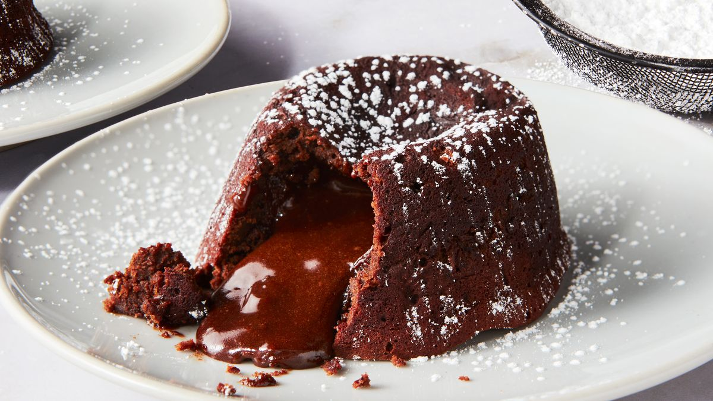

Chocolate Lava Cake

Why Make Chocolate Lava Cake?
Chocolate Lava Cakes might be one of my favorite recipes on the entire planet.
They’re so quick and easy, you’ll want to make these chocolate lava cakes all the time. They look so complicated and intimidating, like something you’d only get to indulge in at a restaurant – but I promise, they’re secretly SO simple.
Ingredients
- 10 tablespoons (142 grams) unsalted butter, plus more for coating ramekins
- 1/2 cup (100 grams) granulated sugar, plus more for coating ramekins
- 8 ounces (227 grams) semisweet chocolate, chopped*
- 4 large eggs
- 4 large egg yolks
- 1 teaspoon vanilla extract
- 1/2 cup (64 grams) all-purpose flour
- 1/2 teaspoon salt
- Fresh raspberries or strawberries
- Powdered sugar, for garnish
Instructions
- Preheat the oven to 425°F. Grease 6 (6-ounce, 170 gram) ramekins generously with butter. Coat the insides of the buttered ramekins with granulated sugar, tapping out the excess.
- Combine the 10 tablespoons of butter and chocolate in a microwave-safe bowl. Microwave on high for 1 minute. Stir, then continue heating in 30-second bursts, stirring between bursts, until the mixture is melted and smooth. Alternatively, melt the chocolate and butter in a double boiler. Let cool.
- In a medium bowl, vigorously whisk the eggs, egg yolks, vanilla, and the 1/2 cup of granulated sugar until slightly thickened and pale in color, about 90 seconds. Gently fold the melted cooled chocolate mixture into the egg mixture.
- Gently stir in the flour and salt. Divide the batter among the ramekins.
- Bake for about 10 to 12 minutes, or until the edges are firm and the top is set but the center is runny. Add an additional minute of baking time if baking straight from the fridge.
- Run a knife around the edges to loosen and let cool for 1 minute. Invert onto dessert plates then let stand inverted for about 30 seconds. You can also serve straight from the ramekin. Serve with fresh berries and powdered sugar, whipped cream, or ice cream if desired.